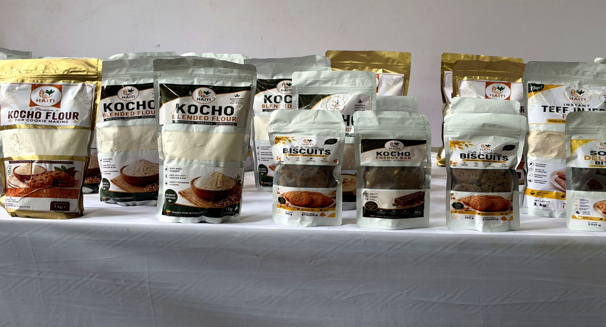
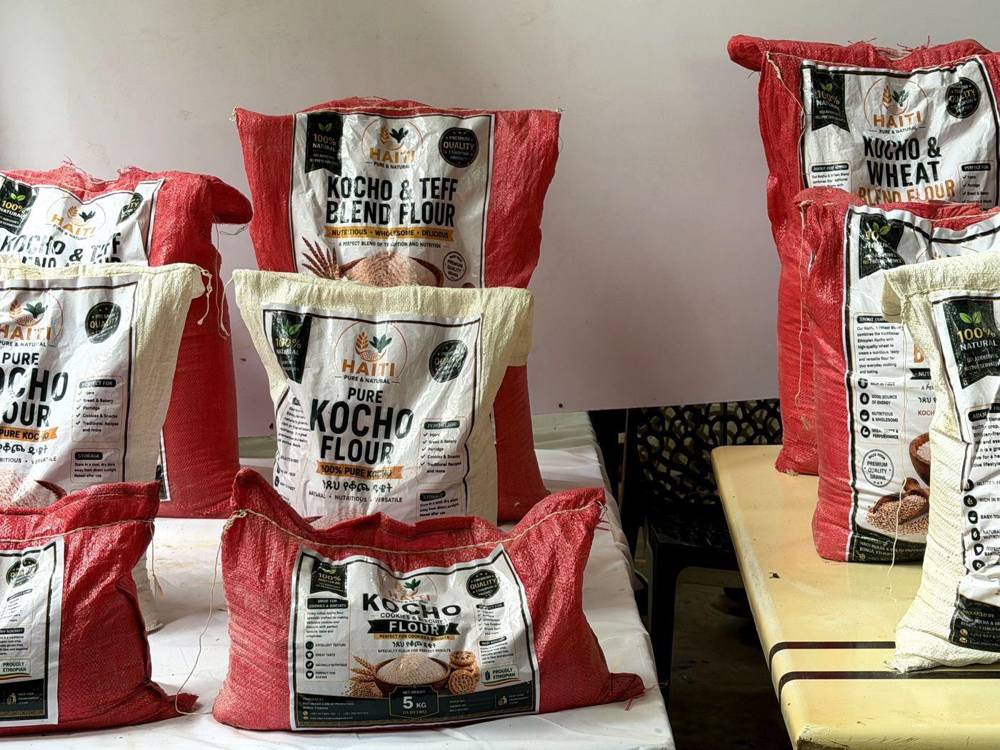

ከዕለታዊ ምግቦች ተነስቶ ወደ ኃላፊነት የተሞላበት የእንሰት ምርት ልማት ያደገ የኢትዮጵያ የምግብ ማምረቻና የፈጠራ ድርጅት።
Haiti Food Innovation ET ከረጅም የመጋገር ተግባራዊ ልምድና ከኢትዮጵያ የራሷ የምግብ ሀብቶች የበለጠ እሴት ለመፍጠር ከመነጨ ቁርጠኝነት ያደገ ድርጅት ነው። በቦንጋ፣ ካፋ ዞን የተመሠረተው በ2015 (እ.ኤ.አ.) ሲሆን ከሃያ ዓመታት በላይ በሆነ የመጋገር ልምድ ላይ ይገነባል።
ሥራችን ሰዎች በሚያውቋቸውና በሚያምኗቸው ምግቦች, እንጀራ፣ ዳቦ፣ ኬክና ብስኩት, ላይ የተመሠረተ ነው። ከዚያ መሠረት ተነስተን ከዘጠኝ ዓመታት በላይ ከእንሰት የሚገኙትን ቆጮና ቡላ ከጤፍ፣ ከስንዴና ከሌሎች የአካባቢ ግብዓቶች ጋር ተግባራዊ ጥቅም እንዲሰጡ ስንሠራ ቆይተናል።
ዛሬ Haiti Food Innovation ET የሚሠራ የምግብ ንግድም፣ እያደገ የሚሄድ የምርምር መድረክም ነው። የተለመዱ ምግቦችን እናመርታለን፤ አዳዲስ በእንሰትና በጤፍ ላይ የተመሠረቱ ምርቶችን እናለማለን፤ ለገዢዎች ከመቅረቡ በፊት እያንዳንዱ ይፋዊ መግለጫ በጥራትና በማስረጃ ምርመራ ያልፋል።

ከአካባቢ ግብዓቶች እሴት የሚፈጥሩ፣ የገበያ ዕድሎችን የሚያሰፉና ኑሮን የሚያጠናክሩ ደኅንነታቸው የተጠበቀ፣ ተግባራዊና ጥራት ያላቸው የኢትዮጵያ ምግቦችን ማልማት፣ ማምረትና ማሰራጨት።
በኃላፊነት በእንሰት ላይ የተመሠረተ የምርት ልማት፣ በጥራት ላይ ያተኮረ ምርትና ሊሰፋ የሚችል የአካባቢ ተጽዕኖ የሚታወቅ ታማኝ የኢትዮጵያ የምግብ ፈጠራ ድርጅት መሆን።
ባህላዊ የምግብ እውቀትን እያከበርን ወጥነትንና ምቾትን እናሻሽላለን።
በገበያ ላይ ያሉ ምርቶች ገና በማረጋገጥ ላይ ካሉት ሁልጊዜ ተለይተው ይቀርባሉ።
የተመዘገቡ ሙከራዎች፣ የጥራት ቁጥጥሮችና የውጭ ማስረጃዎች ከእያንዳንዱ መግለጫ ጀርባ ይቆማሉ።
ቀመሮቻችንንና አእምሯዊ ንብረታችንን እንጠብቃለን፤ ጠቃሚ የሆነውን የሕዝብ እውቀት ግን በኃላፊነት እናጋራለን።
ከደንበኞች፣ ከተቋማት፣ ከአቅራቢዎች፣ ከአርሶ አደሮች፣ ከተመራማሪዎችና ከልማት አጋሮች ጋር እናድጋለን።
የመከታተያ ሥርዓት፣ የቅሬታ አያያዝና ቁጥጥር የተደረገበት ለውጥ ለምናመርተው ሁሉ ተጠያቂ ያደርጉናል።

Haiti በቦንጋ ከሚገኘው የምርትና የፈጠራ ማዕከሉ ይሠራል, የምርት መስመሮች፣ የእንሰት ማቀነባበሪያ መሣሪያዎች፣ የጥራትና የላብራቶሪ ሥራዎች፣ ማከማቻና የምርት ልማት በአንድ ላይ የተሰባሰቡበት። የኩባንያው መዛግብት አንድ ዋና ማዕከል፣ 11 የስርጭት ማዕከላትና ከ136 በላይ ቋሚ ሠራተኞችን ያሳያሉ።
ድርጅቱ በዋና ሥራ አስፈጻሚ አብዱልቃድር መኮ ይመራል፤ የመጋገርና የምርት ልምድ፣ የምግብ ምርምር፣ የጥራትና የላብራቶሪ ሥራ፣ ኦፕሬሽን፣ ስርጭትና የአካባቢ የአቅርቦት ትስስር ያለው ቡድን ይደግፈዋል።